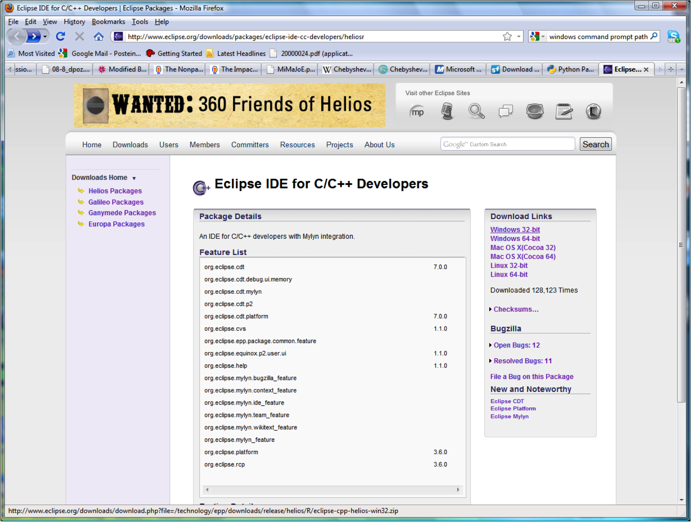
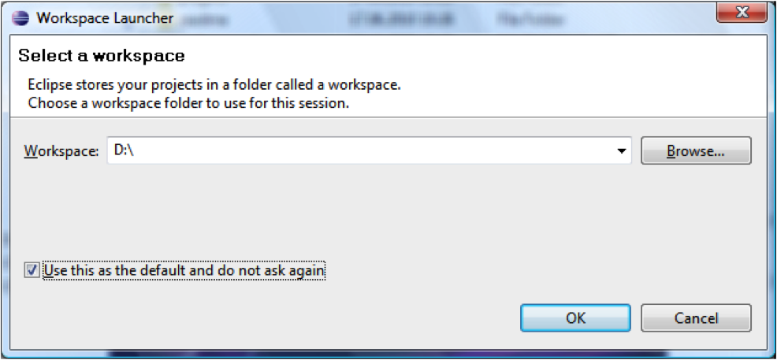
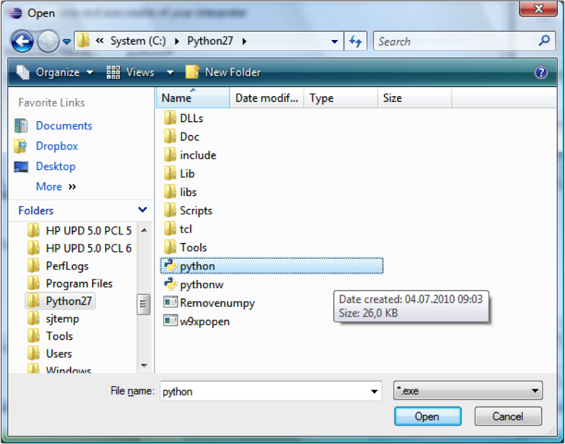

Eclipse¶
Download and installation¶
Eclipse is written in Java and requires that a Java Runtime Environment (JRE) be installed on your machine to run. For our purposes, we require version 7. If you have any trouble running Eclipse, there might not be an appropriate JRE installed on your machine (e.g., Apple only ships version 6, regardless of the version of MacOS X). You can download one from this page. Look for “Download JRE” and follow all necessary steps. If you install a JRE, make sure to remember its architecture (32bit/64bit) and pick the corresponding Eclipse version below.
For installing Eclipse, go to the download section of the Eclipse homepage and get the version for C/C++ developers for your system (if you’re into Fortran / high performance computing, you may also get the parallel applications version). Unpack it, move the entire folder to C:\ (on the Mac: the Applications folder), and make a shortcut to the application eclipse that you find in the folder on your desktop (or wherever you like).
{kind=link}
Start Eclipse. The first thing you need to pick is a workspace. Eclipse has a hierarchical internal structure and you will only be able to create projects in or below this directory. Try to pick or create one that does not contain any spaces – in theory it shouldn’t matter, but you never know... E.g., if you have all your projects on D:\, just pick that:
{kind=link}
Configuration of PyDev¶
Make sure you installed Python before you proceed. Open Eclips and go to Help -> Install new software in the menu bar. In the address bar, type http://pydev.org/updates. Expand the triangle next to PyDev and tick the box next to PyDev for Eclipse:

Click on Next as required, accept the license terms, click on Finish, trust all certificates, and agree to restart Eclipse.
Now we need to tell Eclipse where to find the Python interpreter. In the Eclipse menu bar, go to Window -> Preferences and select PyDev -> Interpreter - Python

Click on New..., name the interpreter “Anaconda Python 3.4”, and click on browse. Go to the place where you installed Anaconda, select python.exe (on Windows, else it will be python in the bin subdirectory):
{kind=link}
After clicking okay, you will be asked about the SYSTEM pythonpath. Accept the default, click okay twice. Done.